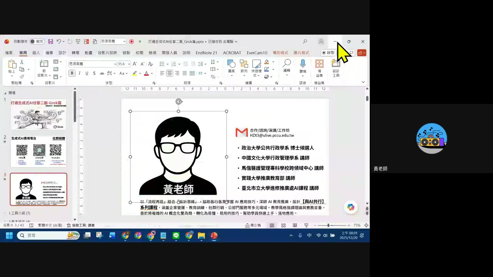
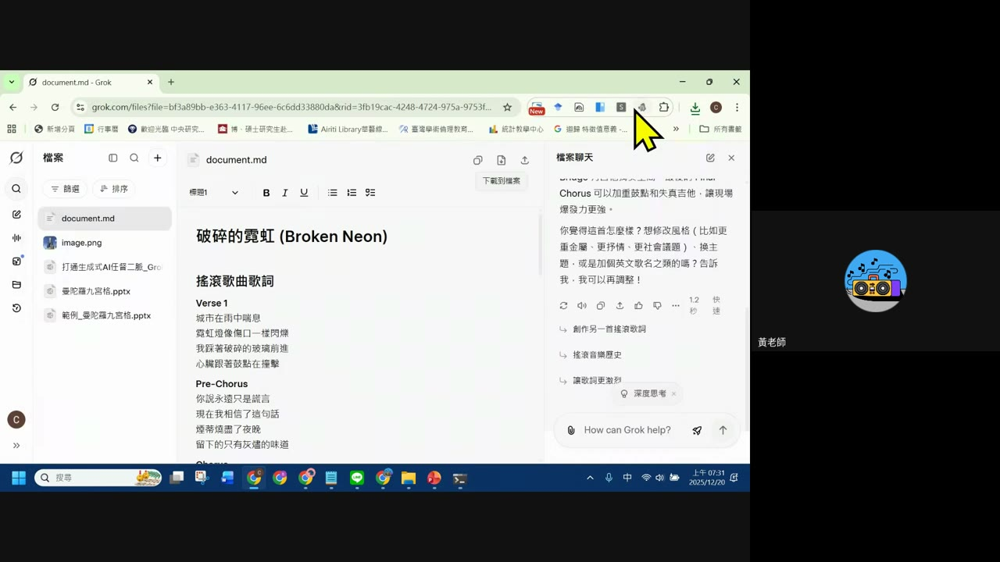
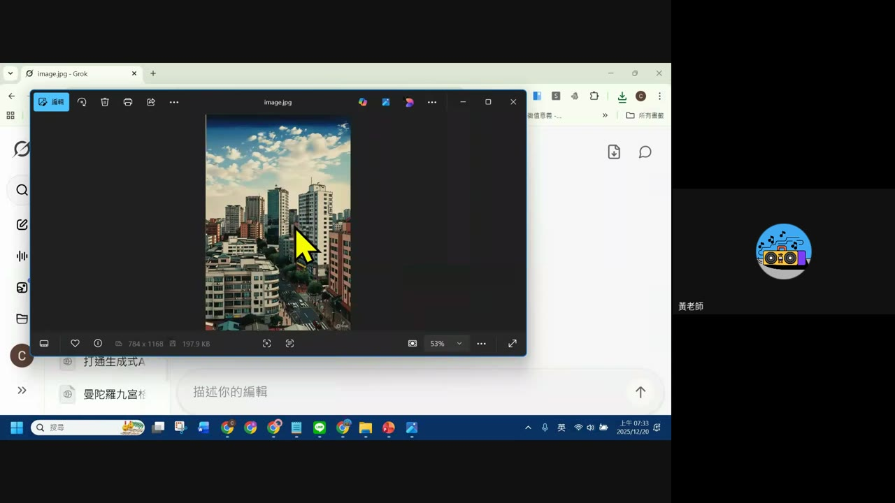
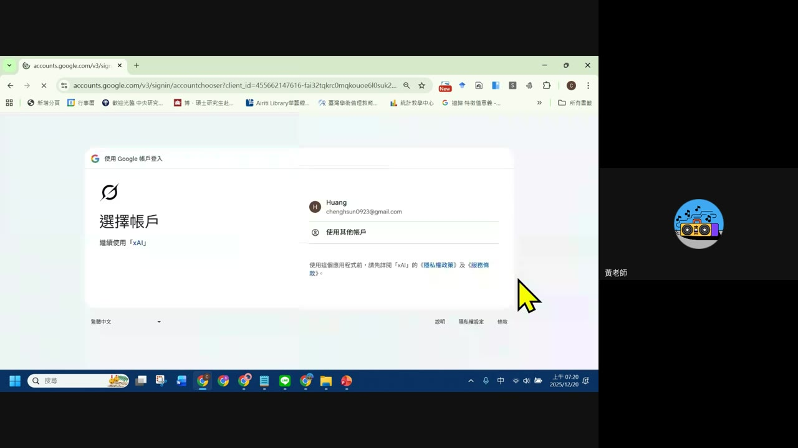
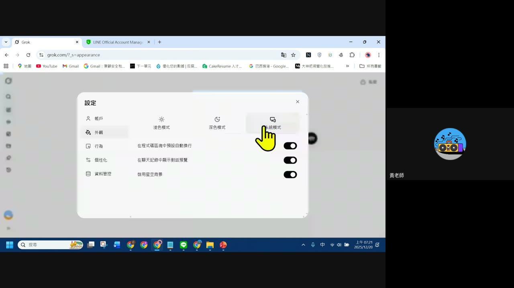

0. 課程資訊與教材
| 課程名稱 | EP3「打通生成式AI任督二脈：Grok 篇」 |
|---|---|
| 頻道 | 生成式 AI 應用電台・晨學講堂（第三週，改為早上場次） |
| 直播日期 | 2025/12/20（畫面時鐘顯示 07:04–08:11） |
| 教材 | 本機簡報「打通生成式AI任督二脈_Grok篇.pptx」共 43 頁＋錄影回放（61.5 分鐘） |
| 一句話先懂 | Grok 的兩大王牌是「快與便宜」：回覆速度快、免付費也能用（一天二三十次搜尋都不會被擋），另外還有內建新聞 Agent、圖文並茂的來源引用，以及好玩的語音人格化功能。 |

1. 開場：為什麼改到早上直播
逐字稿原音（01:52–02:39）。
「謝謝大家一樣很早，現在早上 7 點 06 分，大家應該可能在家、或者是在外面運動、或者是剛好在吃早餐……我們進入第三週，這個早上起來學 AI 的過程。中間我剛好有課，12 月年底時間卡比較滿，晚上還蠻多人在開課，我就想說換個時間，早上比較有空，抱歉讓大家比較麻煩一點，早上起來上課。」
💡 這集是系列第三週，因講師 12 月行程排滿，臨時把直播場次從晚上調到清晨——晨學講堂「早起學 AI」的慣例由此延續。
2. 快速思考 vs 深度思考：實測速度差異
逐字稿原音（39:16–40:39），現場實際操作對比兩種回覆模式。
| 模式 | 耗時（畫面顯示） | 特色 |
|---|---|---|
| 快速思考 | 約 1.4 秒 | 回覆快，但整理程度較簡略，搜尋來源會直接顯示在對話中（圖文並茂，類似社群貼文樣式，可點來源查看原始網頁，例如引用「食尚玩家」的介紹） |
| 深度思考 | 約 9.6 秒 | 先進入推理模式，再彙整結果；會主動整理成表格，內容更完整，但搜尋的來源數量反而比快速模式少；表格支援一鍵複製 |
逐字稿：「這個是模式，看一下模式上的差異，第一個是一般快速的版本，第二個他告訴你花了 1.4 秒，第二個他花了 9.6 秒，然後相關的搜尋在這邊，他搜尋的就比較少，但是他幫你整理整理好了，一樣表格可以一鍵複製。」
⚠️ 誠實聲明：本集錄影約 08:31–38:20 這段語音因背景雜訊、faster-whisper 辨識異常，逐字稿大量出現重複亂碼（無法還原原話），但期間畫面仍持續示範操作（見第 5、6 章截圖）；本頁對這段時間的操作描述以畫面截圖內容為準，不補述未能辨識的口語細節。
3. Deep Search：比 ChatGPT／Gemini 更快的網路搜尋
逐字稿原音（40:55–42:29），現場示範查詢「2025 年台灣最推薦的聖誕節交換禮物」。
- 搜尋範圍更廣：比一般聊天模式搜尋的資料量更多。
- 速度優先：「雖然說沒辦法做到像 ChatGPT 或 Gemini 查資料那麼廣、那麼深，但是在查資料的速度上還有回應上會比較快。」
- 一定附來源：「他會告訴你關鍵的 Citation 從哪邊來。」
- 免費額度夠用：「目前我免費、沒有付費的版本，Deep Search 我一天用個二三十次都沒有擋過。」
「他沒辦法做出像 GPT 或 Gemini 整篇的報告，不過內容上基本上都準，而且速度快很多。」
—— 講者對 Deep Search 的定位（41:47）
4. 報導員：內建新聞 Agent
逐字稿原音（42:38–42:53）。
「報導員這個算是他自己寫好的一個 Agent，你一點，他每天就會告訴你說今天有什麼新聞——特斯拉的新聞、柬埔寨的新聞、娛樂的新聞等等，這個大家知道就可以了。」
💡 定位：不用自己設定，Grok 內建現成的「報導員」Agent，點開即可看當日新聞摘要，橫跨科技、國際、娛樂等類別。
5. 創意生成示範：寫歌詞＋生圖改圖
畫面實錄（此段語音多為辨識異常區間，以截圖為準）。


- Grok 除了文字問答，也能直接生成內容檔案（如 document.md 歌詞檔）並放在檔案側欄管理。
- 生成圖片後可在同一個介面繼續編輯、分享、下載。
6. 語音人格化與外觀設定
逐字稿原音（43:13–47:59，語音辨識品質較差，僅摘要可辨識片段）＋畫面截圖。
- 語音功能示範：類似 ChatGPT 的語音模式，可以指定不同口音／人設跟 Grok 對話（逐字稿可辨識片段：「你要很像 ChatGPT 一樣……你叫他……比如說你要帶有英式口音……」），示範中提到 Grok 的語音角色「有每一個人設」。
- 帳號登入：用 Google 帳號登入 xAI／Grok（畫面顯示「選擇帳戶」畫面）。
- 外觀個人化設定：淡色模式／深色模式／系統模式三種主題，另有「在程式碼區塊中預設自動換行」「在聊天記錄中顯示對話預覽」「啟用星空背景」等細節開關。


7. 重點整理
- 快速思考 vs 深度思考：1.4 秒 vs 9.6 秒，深度模式來源較少但整理成表格更完整。
- Deep Search：搜尋範圍比一般模式廣，比 GPT／Gemini 深度研究快，免費額度一天二三十次不會被擋。
- 報導員 Agent：內建、免設定的每日新聞摘要功能。
- 創意生成：能寫歌詞（存成 md 檔）、生圖／改圖，並在對話中持續追問調整。
- 語音人格化：可指定口音／人設進行語音對話；外觀設定支援深色模式等個人化選項。
8. 資料來源與製作說明
- 原始教材：EP3「打通生成式AI任督二脈：Grok 篇」錄影回放（61.5 分鐘，anyone-reader 權限，公開可下載）；本集 Drive 資料夾未附獨立簡報檔，簡報為講者當下開啟的本機 PowerPoint（43 頁，畫面可見縮圖）。
- 製作方式：下載完整錄影 → faster-whisper（small 模型）產出逐字稿 → 場景變化偵測抽取畫面關鍵幀 → 親眼逐張判讀畫面內容 → 對照逐字稿與畫面截圖整理成本頁章節。
- 誠實聲明：錄影約 08:31–38:20 語音因背景雜訊或收音問題，faster-whisper 大量輸出重複亂碼（無法還原原話）；43:13–47:59 語音辨識品質亦較差。這些區間的操作描述以畫面截圖可直接判讀的內容為準，未能辨識的口語細節不補述、不杜撰。
- 介面參考：版型沿用本站 EP29–EP46 課堂筆記的乾淨白底編輯風格。